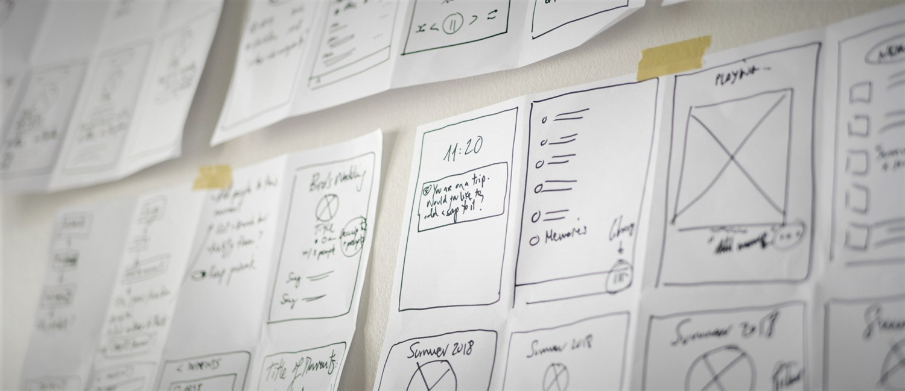
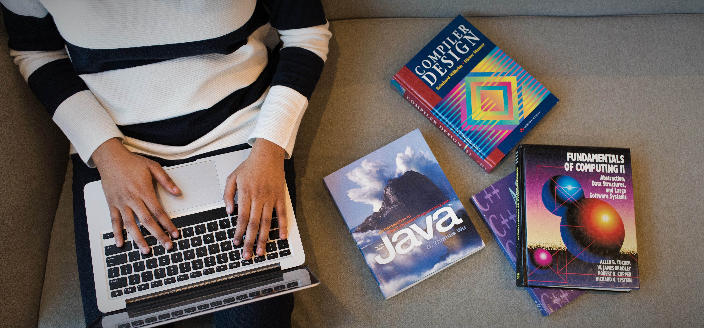

Plan Your Code
Ngoding memang asik ya? tapi bila kita buat asal - asalan pasti hasilnya kurang
memuaskan, ya kan?
Sebelum kita memulai ngoding sebaiknya kita melakukan planning terlebih dahulu, kita mau membuat
program apa? untuk siapa? dan bagaimana desainnya nanti termasuk UI dan UX untuk menunjang
desainnya.
Crazy Eight

Merupakan Metode Desain dengan membuat sketsa di kertas dengan ditekuk menjadi
8 bagian dan setiap bagian menjelaskan tentang berjalannya program secara sketsa dengan harapan
program akan berjalan sesuai pembuatan Crazy Eight. Dengan teknik ini dipastikan
program berjalan sesuai ide yang telah kita buat.
Design System
Design system adalah penerapan semua desain yang sudah ditetapkan sebelumnya.
Design system tak kalah penting dengan crazy eight, karena setiap design program akan diterapkan
disini. Misalnya button menggunakan padding 20px, dengan warna biru tosca, maka semua button
akan menggunakan settingan yang sama dengan tujuan agar nyaman dipandang dan memiliki tema.
Design System lebih mengarah kepada pengaturan UI dan UX secara detail.
Use Right Technology

Gunakan teknologi dengan tepat, dengan memanfaatkan software yang ada di
internet kita dapat mengoptimalkan pekerjaan. Banyak sekali
referensi yang tersedia di internet seperti w3schools.com, stackoverflow.com, dan masih banyak lagi
referensi yang ada
bila anda merasa bingung harus mulai dari mana. Berikut adalah tips yang harus anda cari untuk
mempercepat
proses belajar anda.
Use Right Tools
Tools merupakan software yang kita gunakan untuk membuat sebuah baris
pemrograman yang fungsinya untuk membuat program. Banyak sekali tools - tools yang ada seperti
Visual Studio Code,
Sublime Text, Atom, NotePad++ dan masuh banyak lagi tools - tools
yang ada, dan setiap tools
memiliki kelebihan dan kekurangannya masing - masing.
Use Framework
Framework adalah kerangka kerja yang sudah ada, kita hanya menggunakan saja,
dengan begitu kita dapat mempersingkat waktu pengerjaan program yang kita buat dengan efisien.
Use Library
Sesuai dengan namanya yang artinya perpustakaan merupakan istilah yang
digunakan untuk pengambilan data cloud yang bertujuan untuk mengambil komponen tertentu
seperti contohnya kita membutuhkan icon yang ada di fontawesome.com
maka kita panggil data icon tersebut untuk kita gunakan.
Development

Merupakan pengembangan yang kita perlukan untuk mengoptimasi sebuah website yang
telah selesai kita buat. Berikut ulasannya.
Use Two Fonts Only
Mengapa hanya 2 font saja? kenapa tidak 5 atau berbeda setiap paragraf yang
kita buat.
Karena terlalu banyak font membuat website yang kita buka akan mengalami delay yang lebih
lama. Dari segi
Desain juga kurang bagus untuk dipandang apabila terlalu banyak font yang kita muat.
Minimize CSS
Kemudian minimalisir kegunaan CSS yang
tidak berguna agar Speed Open web kita lebih cepat. Disarankan untuk tidak
menggunakan Inline CSS agar memudahkan dalam styling CSS.
Minimize and Compress Image
Terkadang kita menggunakan Image dengan kualitas yang terlalu besar
dalam website yang kita buat, itu justru membuat website yang dibuat akan lama untuk nge-loadnya
jadi gunakan image dengan kualitas maksimal HD 720p. Kemudian minimalisir kegunaan
JavaScript yang berlebihan, karena pembacaan file HTML dibaca dari atas ke bawah disarankan
untuk menaruh file JavaScript di paling bawah.